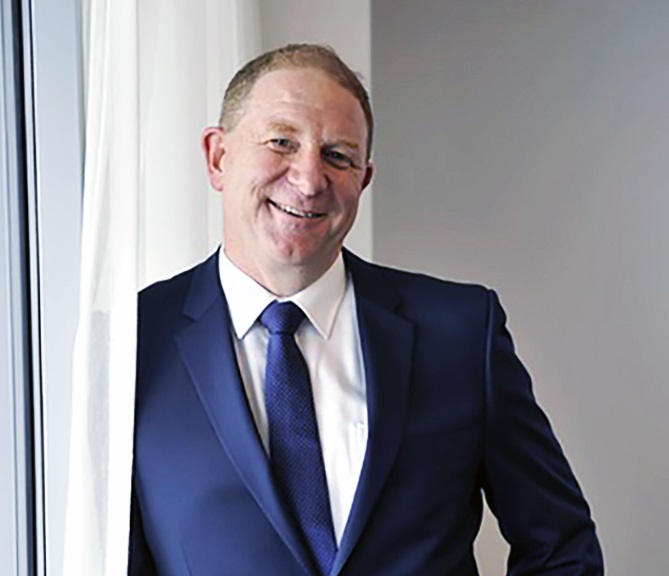
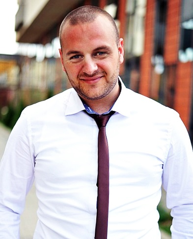

We are a non-profit organisation working to improve the quality of online communication. We started out in April 2014 and have since then grown to an organisation of 3 permanent staff-members and numerous volunteers.
These staff-members are:

Director at Events4Groningen. Neil has a great social network and is present on every social evenement in Groningen.
People love his enthusiasm for Groningen and its beauty. Besides being director at Events4Groningen, Evan also is part-time photographer.
In his movies, as well in his photos, you can see his keen eye for detail.
Stevie, or Stephie, is a presenter at TV MAX. Not a day is the same for her and that is what she loves about her job. This symposium is the sole reason she is coming to Groningen.
Stevie is a well-known person who attracts publicity and that is great news for this symposium!

In Graham's every day life he is an artist who is very active on social media. His twitter account has more than 89.000 followers.
In his tweets he discusses online communication and reviews Internet related conferences. You should always be careful what you tell mister Palmer.
Before you know it, he'll send a tweet about what you said. So make sure you stay on his positive side.